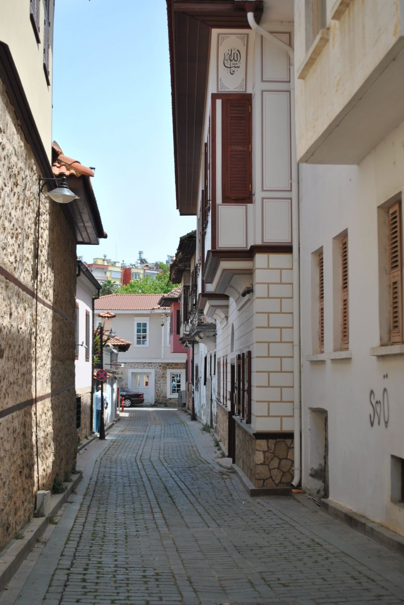

你不知道的德国 · 29
🤫 德国周日
为什么全城「静音」？
Ruhezeit · 周日禁令 · 邻居可以报警
🔇 周日，全城按下暂停键
如果你周日到德国，第一感受可能是——城市死了。
超市关门、商场关门、理发店关门，连药店都只有少数值班药房（Notapotheke）开着。街上安静得能听见鸟叫。
🔇 这不是商家不想赚钱，是法律规定的。德国《商店营业时间法》（Ladenschlussgesetz）规定：周日和法定假日，商店必须关门。
🇩🇪 Auf Deutsch
Am Sonntag sind in Deutschland fast alle Geschäfte geschlossen – nicht aus Tradition, sondern per Gesetz. Nur Notapotheken und Tankstellen haben offen.
⏰ Ruhezeit：一条不成文但很硬的规定
Ruhezeit（安静时间）是德国人生活里非常重要的概念。通常包括：周日和法定假日全天，以及工作日晚上 22:00 到次日 7:00。
在这段时间里，制造噪音是被明令禁止的。各地还有更细的规定：比如不少城市要求午休时间（13:00–15:00）也保持安静。
⏰ 具体时段各州不同，有的地方周日还禁止洗车、浇花园、用吸尘器。你的邻居完全有权投诉——而且真的会有人这么做。
🇩🇪 Auf Deutsch
Ruhezeiten gelten sonntags und an Feiertagen ganztägig sowie werktags meist von 22 bis 7 Uhr. Vielerorts auch mittags von 13 bis 15 Uhr.
🚫 具体不能做什么
一份德国人熟悉的「周日禁忌清单」：钻墙、敲钉子、割草机、电锯、洗车、倒玻璃瓶（玻璃回收桶尤其吵）、大声放音乐、办派对。
还有一些没那么明显的：晾衣服的洗衣机、扫地机器人的定时启动、甚至用吸尘器——都可能在邻居的投诉范围内。
🍾 倒玻璃瓶是德国特色的禁忌：玻璃回收桶（Altglascontainer）在周日和晚上是禁止使用的。因为瓶子砸碎的声音在居民区里非常刺耳。
🇩🇪 Auf Deutsch
Verboten sind sonntags u. a. Bohren, Rasenmähen, Autowaschen und das Einwerfen von Glas in Altglascontainer. Der Lärm stört die Wohnruhe.
⚖️ 这不是「建议」，是法律
Ruhezeit 的法律依据包括联邦层面的《联邦排放保护法》（BImSchG）和各州的《星期日与假日法》。
违反的后果：警告、罚款（通常 15–5000 欧元不等），严重时甚至会被要求停工。邻居通常先敲门提醒，不奏效就报警。
👮 警察真的会来。德国警察接到噪音投诉必须出警——这不是「邻里纠纷不受理」的范畴。有些人甚至拍视频留证。
🇩🇪 Auf Deutsch
Grundlage sind das Bundes-Immissionsschutzgesetz und die Landes-Sonntagsgesetze. Bei Verstößen drohen Bußgelder von 15 bis über 5000 Euro.
🛠️ 怎么活下来？
德国人自己总结出了一套「周日生存手册」：周六把所有需要噪音的事干完——洗衣、购物、打扫、修剪花园。
周日则属于：散步（Spaziergang）、喝咖啡、看足球、和家人吃饭、开车出游。这也是德国「周日文化」的核心。
🚶 德语有个词专门形容周日活动：Sonntagsspaziergang（周日散步）。德剧里经常出现一家人周日穿戴整齐出门散步的镜头——这是德国中产的经典画像。
🇩🇪 Auf Deutsch
Deutsche erledigen laute Arbeiten am Samstag. Der Sonntag gehört dem Sonntagsspaziergang, dem Kaffee und der Familie.
🤔 争议：是保护还是束缚？
支持者认为：Ruhezeit 保护了劳动者休息权，也让小商店免于被大超市的「无限营业」压垮。
反对者则认为：都 2026 年了，为什么周日买不到东西？旅游业、服务业从业者抱怨，游客也觉得不便。近年已有部分火车站、加油站便利店被允许周日营业。
🌍 德国是欧洲营业时间最严格的国家之一。而在邻国荷兰、比利时、奥地利，周日商店通常也是关门的——这不是德国独有的。
🇩🇪 Auf Deutsch
Befürworter sehen den Schutz der Arbeitnehmer, Gegner halten die Regel für überholt. Inzwischen dürfen Bahnhöfe und Tankstellen sonntags teilweise verkaufen.
📖 想读更多德国冷知识？
29 期「你不知道的德国」深度专栏，都在 Leon 德语学习中心。
📚 进入网站